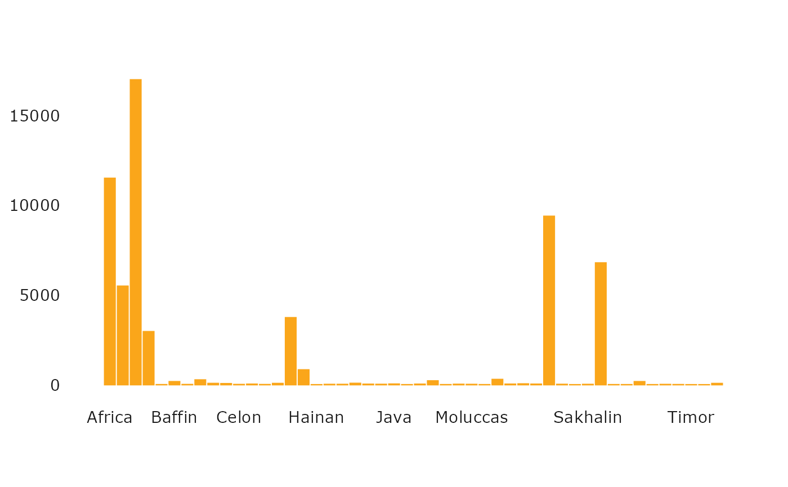

Basic barplots that follow USQ colour and typography guidelines that uses (hopefully) sensible defaults.
barplot_usq(height, col = "usq charcoal", ...)
| height | Either a vector or matrix of values describing the bars which
make up the plot. If height is a vector, the plot consists of a sequence of
rectangular bars with heights given by the values in the vector. If height is
a matrix and beside is |
|---|---|
| col | Colour to use as fill for the bars as a digit. Defaults to 1, USQ Charcoal. There are six colours that can be used, see Details for more. |
| ... | Arguments to be passed to methods, such as graphical parameters
(see |
Names of colours for use in plots from the USQ Visual Identity Palette are
available from link{usq_cols}.
barplot_usq(islands, col = "secondary orange")